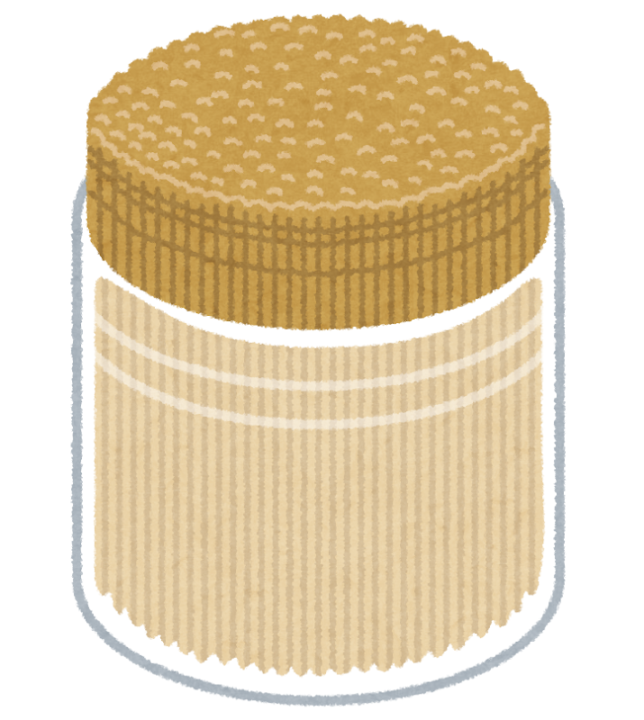

爪楊枝建築
- タワー・橋・オブジェを制作
- 強度や美しさを競う制作会
Toothpick Circle
Welcome to
私たちは、爪楊枝の可能性を本気で追求するサークルです。
「細い」「折れやすい」「地味」――そんなイメージを覆し、創作・研究・交流を楽しみます。

爪楊枝サークルは、ものづくりが好きな人・ちょっと変わった活動をしてみたい人・ 真面目にふざけたい人が集まるゆるくて真剣なサークルです。 活動内容は自由度が高く、初心者でも大歓迎です。
学内掲示板
爪楊枝サークル ポスター掲載中